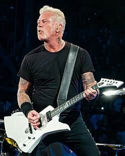

James Hetfield
James Alan Hetfield (lahir 3 Agustus 1963[1]) adalah penulis lagu, pendiri, penyanyi dan pemain gitar ritme kelompok heavy metal Metallica. James bersama tiga kawannya yang tergabung dalam Metallica merupakan salah satu dari The Big Four, yaitu Metallica, Anthrax, Slayer, dan Megadeth melalui keunikan dan gaya masing masing keempat band itulah genre thrash metal pernah meraih puncak kejayaannya. James Hetfield terkenal karena riff gitarnya yang tidak terlalu 'njelimet' tetapi sangat pas dan cocok ketika bersandingan dengan instrumen lain dan juga penampilannya ketika di atas panggung yang garang dan kerap mengundang decak kagum setiap penonton yang melihatnya.
Kembali ke Dashboard